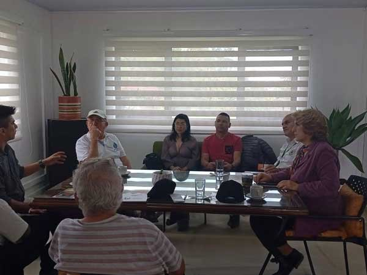
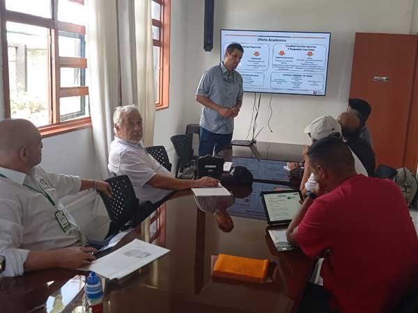
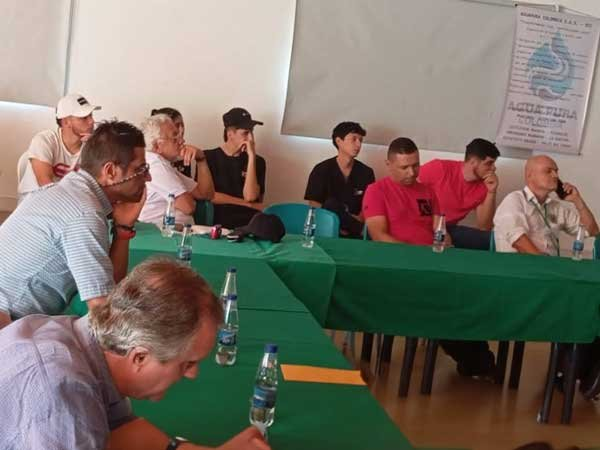
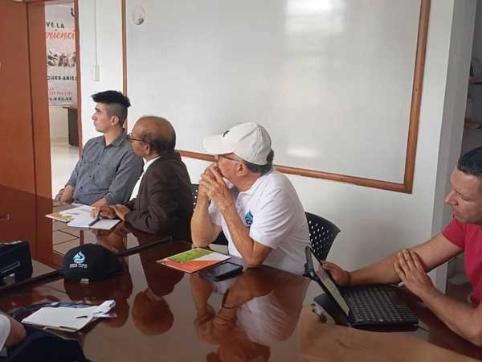
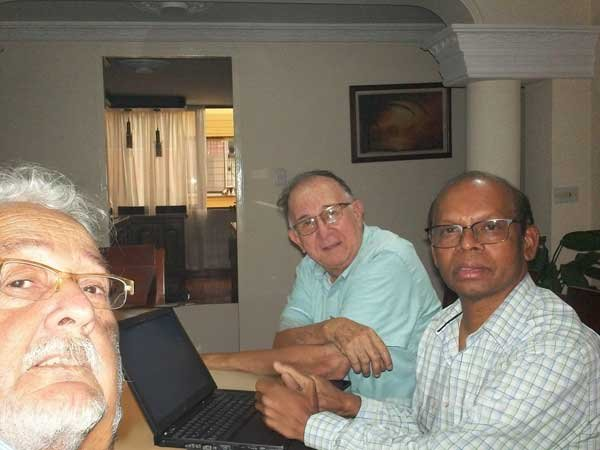

Iniciativa internacional para la transformación de subproductos del café en recursos de alto valor y energía sostenible.
El pasado 5 de noviembre de 2024, Colombia fue escenario de un importante evento que marcó el inicio de una alianza estratégica para el aprovechamiento de los residuos orgánicos del cultivo del café. La ciudad de Pereira recibió al Representante Legal de RSB Environmental Solutions, LLC., Ruben D. Salazar Naranjo, quien viajó desde la sede matriz en Cape Coral, Florida, acompañado por el distinguido investigador Ph.D. Veera M. Boddu.
El objetivo de esta visita fue socializar y precisar los alcances de una alianza estratégica impulsada por la Embajada Británica, centrada en el aprovechamiento sostenible de los residuos del café en Colombia. Esta iniciativa busca transformar dichos residuos en productos de alto valor agregado como briquetas, abono orgánico y carbón activado, contribuyendo de manera directa a la sostenibilidad ambiental y al desarrollo económico regional.

Uno de los momentos más destacados de la visita fue la jornada académica desarrollada en las instalaciones de la Universidad de Santa Rosa de Cabal (UNISARC). Este encuentro clave contó con la participación de la Rectora, Doctora Elsa Gladys Cifuentes Aranzazu, miembros del grupo académico y líderes locales.
Entre los asistentes destacados se encontraron los alcaldes de los municipios de Apía y Pueblo Rico (Risaralda); el Presidente de ASOJUNTAS de Alcalá, José Germán Osorio; la Coordinadora de la sede de Aguapura Colombia, Francy Liliana Loaiza Monsalve; y el Coordinador de la sede APC-B.I.C. Pereira, Ingeniero Emilio Torres Lombana.
El Dr. Veera M. Boddu, reconocido científico internacional, participó en esta visita técnica por invitación de Aguapura, que cubrió la totalidad de los costos de traslado, alojamiento y manutención. Es importante precisar que su presencia no representó a la Agencia de Protección Ambiental de los Estados Unidos (EPA), aunque actualmente se desempeña como Científico Senior en dicha institución, liderando investigaciones en el Centro de Soluciones Ambientales y Respuesta a Emergencias.
Con una destacada trayectoria como Director de Investigación en el Servicio de Investigación Agrícola del Departamento de Agricultura de los Estados Unidos (USDA), el Dr. Boddu ha coordinado proyectos de gran escala centrados en el desarrollo de productos de valor agregado a partir de materias primas agrícolas. Su experiencia resulta clave para asesorar la transformación de la biomasa residual del café en Colombia.


Durante su estancia, el Dr. Boddu exploró el potencial de productos innovadores derivados de los residuos del café, evaluando la infraestructura local, los recursos naturales y la viabilidad comercial de nuevos desarrollos en la región. El encuentro en UNISARC permitió identificar oportunidades de colaboración directa en la producción cafetera y el aprovechamiento integral de sus subproductos.
Gracias a la experiencia del Dr. Boddu en tecnologías ambientales y energéticas, se lograron avances significativos en la construcción de alianzas estratégicas con UNISARC, una institución firmemente comprometida con el desarrollo rural y agrícola. Se establecieron las bases técnicas y de investigación cooperativa que fortalecerán la agroindustria de la región.
Estamos convencidos de que esta alianza contribuirá significativamente al crecimiento de la industria cafetera colombiana, posicionando al país como líder en innovación y sostenibilidad en el sector. La combinación de la experiencia internacional y el compromiso local abre nuevas oportunidades para el desarrollo de productos derivados de la biomasa del café y la implementación de prácticas sostenibles que beneficiarán directamente a productores, campesinos y empresarios del sector.


En AguaPura Colombia, estamos redefiniendo el futuro del medio ambiente. Nuestro compromiso con la remediación sostenible es firme, y tú puedes ser parte de este cambio.
Solicitar Información